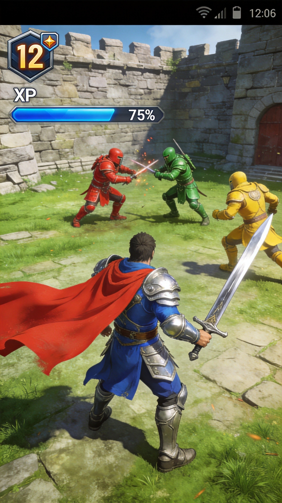
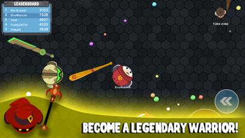
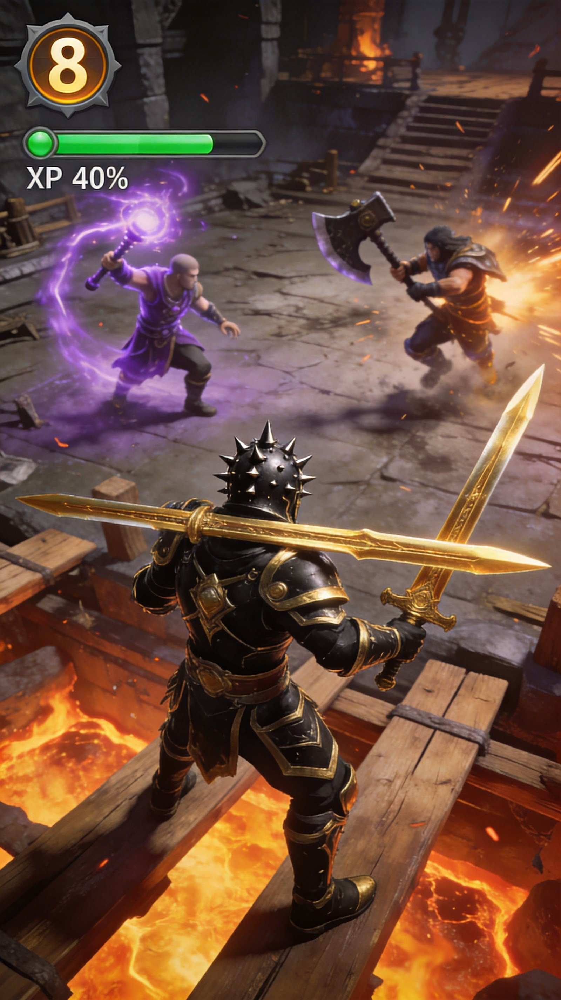
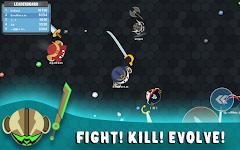

EvoWars.io is a fast-paced arena combat game where you evolve through different warrior forms by gaining kills and XP. Starting as a weak fighter, you grow into increasingly powerful warriors. The game combines skill-based combat with progression mechanics. This guide covers evolution paths, weapon choices, and combat strategies.
🎯 Game Basics

Objective
Evolve from a weak warrior to the ultimate champion by defeating other players. Each kill grants XP and gold to upgrade your abilities. The player who reaches the final evolution form first often has a significant advantage.
Controls
- WASD - Move your character
- Left Click - Attack
- Right Click - Dash/Dodge
- Space - Special ability (when unlocked)
Game Modes
- Solo - Free for all, last player standing wins
- Teams - Team up with others against rival teams
- Custom - Private rooms with friends
📈 Evolution System

Evolution Path
The evolution progression: Peon → Warrior → Knight → Champion → Elite → Super → Mega → Ultra → Monster → Titan → GOD
XP Requirements
Each evolution requires increasingly more XP. Early evolutions happen quickly, but later stages require multiple kills to progress.
Evolution Benefits
- Larger size - Harder to hit, more intimidating
- Stronger attacks - More damage per hit
- Longer reach - Hit enemies from farther away
- New abilities - Special moves unlock at higher tiers
Don't die! Death resets you to the lowest evolution. Protecting your progress is crucial for winning.
⚔️ Weapons Guide
Sword
The default weapon. Balanced damage and speed. Good for beginners.
Axe
Higher damage but slower swing speed. Best for players who prefer heavy hits over rapid attacks.
Mace
Fast attacks with moderate damage. Good for aggressive playstyles.
Spear
Long reach but lower damage. Great for keeping enemies at distance.
Weapon Upgrades
- Damage - Increases attack power
- Speed - Faster attack animations
- Range - Longer weapon reach
⚔️ Combat Strategies
1. Positioning
Stay near groups of weaker enemies to get easy kills. Avoid fighting evolved players until you're equally strong.
2. The Hit and Run
Attack enemies and dash away before they can retaliate. This strategy is especially effective with faster weapons.
3. Gang Up
In team modes, focus fire on single targets. Divide enemies to create advantages.
4. Read Your Opponent
Watch enemy movement patterns. Predict their attacks and dodge accordingly. Good reads win fights.
5. When to Fight vs. Flee
Fight when you have a level advantage. Flee when outmatched. There's no shame in living to fight another day.

💎 Pro Tips
Use the environment. Walls and obstacles can help you escape or corner enemies. Use them strategically.
Don't overcommit. In 1v1 fights, one mistake can cost you everything. Play conservatively in close matches.
Target lower evolutions. They're easier kills and still give good XP. Save risky fights for when you're strong.
Master your weapon. Each weapon has timing. Practice until attacks feel natural.

❓ Frequently Asked Questions
What is the best weapon?
Each weapon has strengths. Sword is the most balanced. Axe does highest damage. Spear has longest range. Choose based on your playstyle.
How do I avoid dying?
Stay aware of your surroundings, don't fight higher evolutions when weak, use dash to escape dangerous situations, and don't overextend.
Do weapons affect evolution?
No, evolution is based on XP from kills. Weapons only affect combat performance.
How do I catch faster players?
Use dash abilities strategically. Predict their movement and cut them off. Sometimes it's better to let them go.
Is team mode better for beginners?
Yes! Team mode provides backup and reduces the pressure of solo survival. Learn the game with support from teammates.
📝 Conclusion
EvoWars.io rewards skill, patience, and smart play. Evolve wisely, choose your fights carefully, and master your weapon of choice. Remember: survival is just as important as aggression. Good luck, warrior!
Ready to evolve? Jump into EvoWars.io and start your journey to becoming a GOD!
Last updated: January 20, 2024
Written by the iogameguide.com team